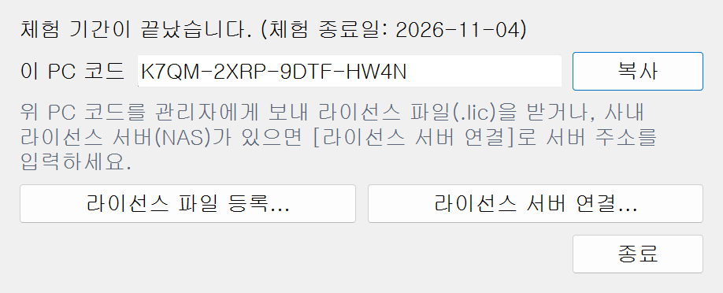
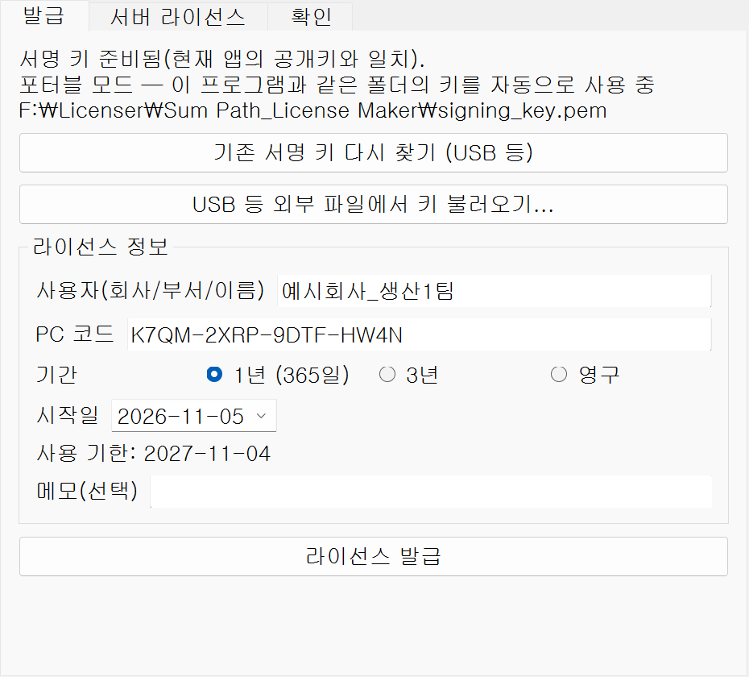
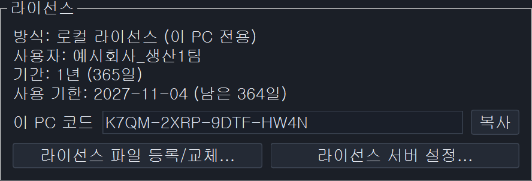
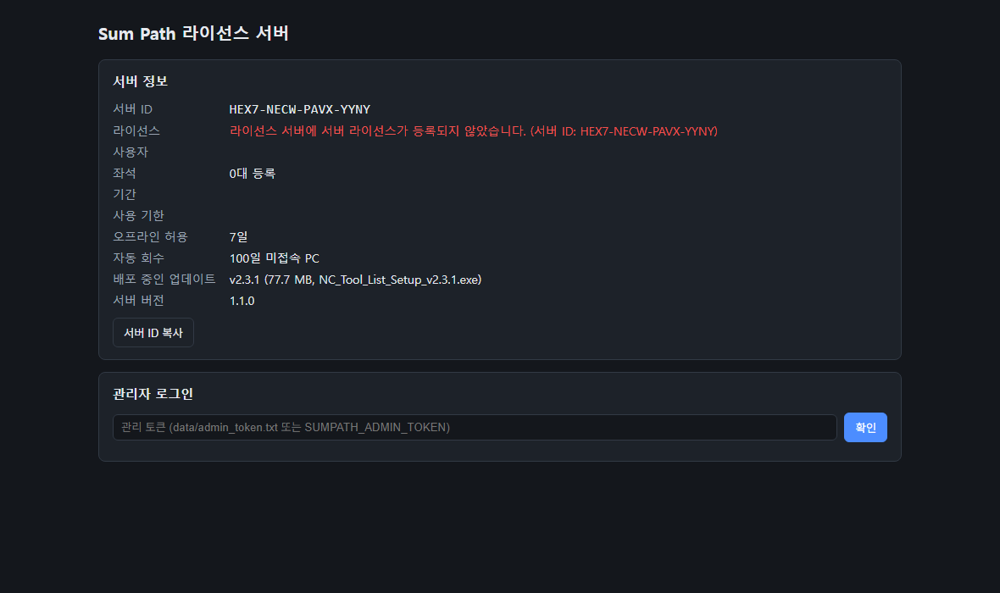
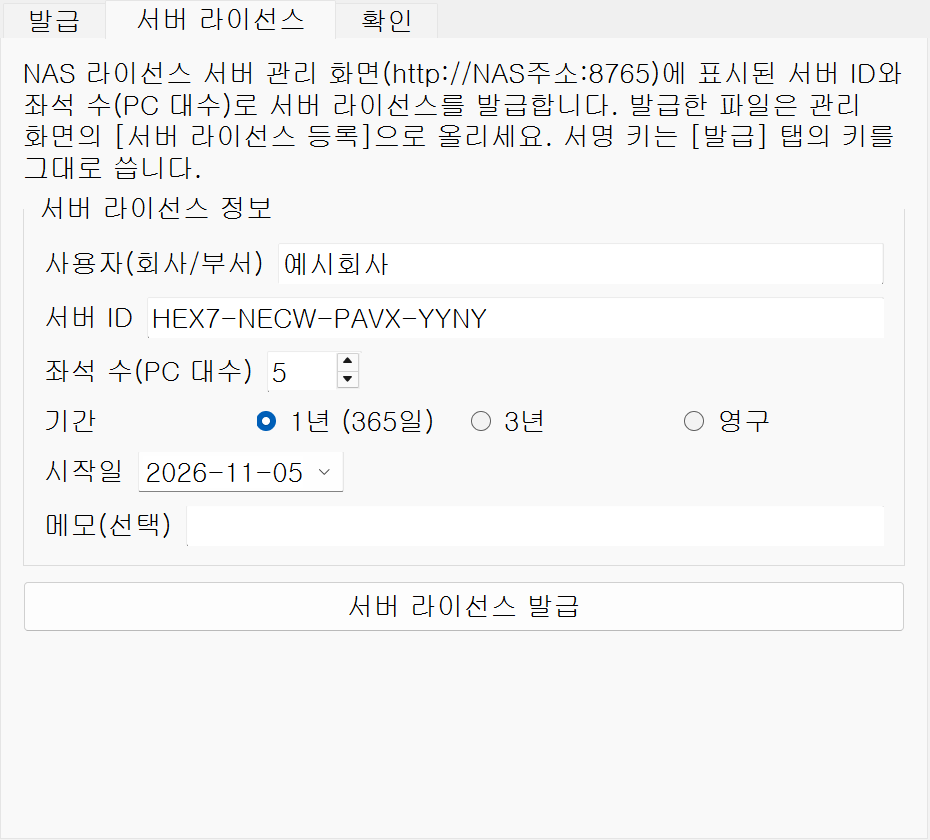
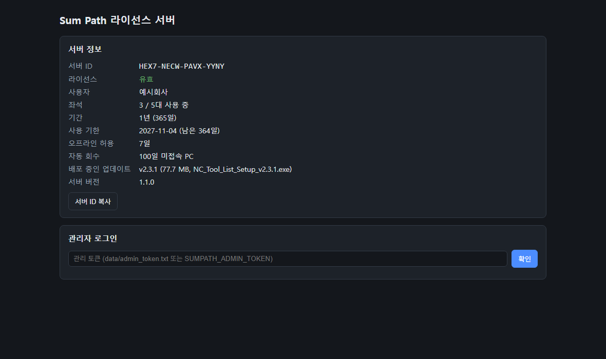
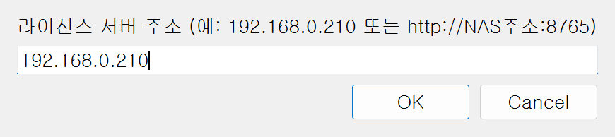
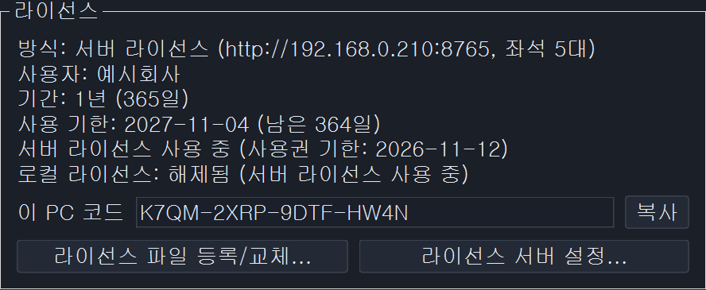
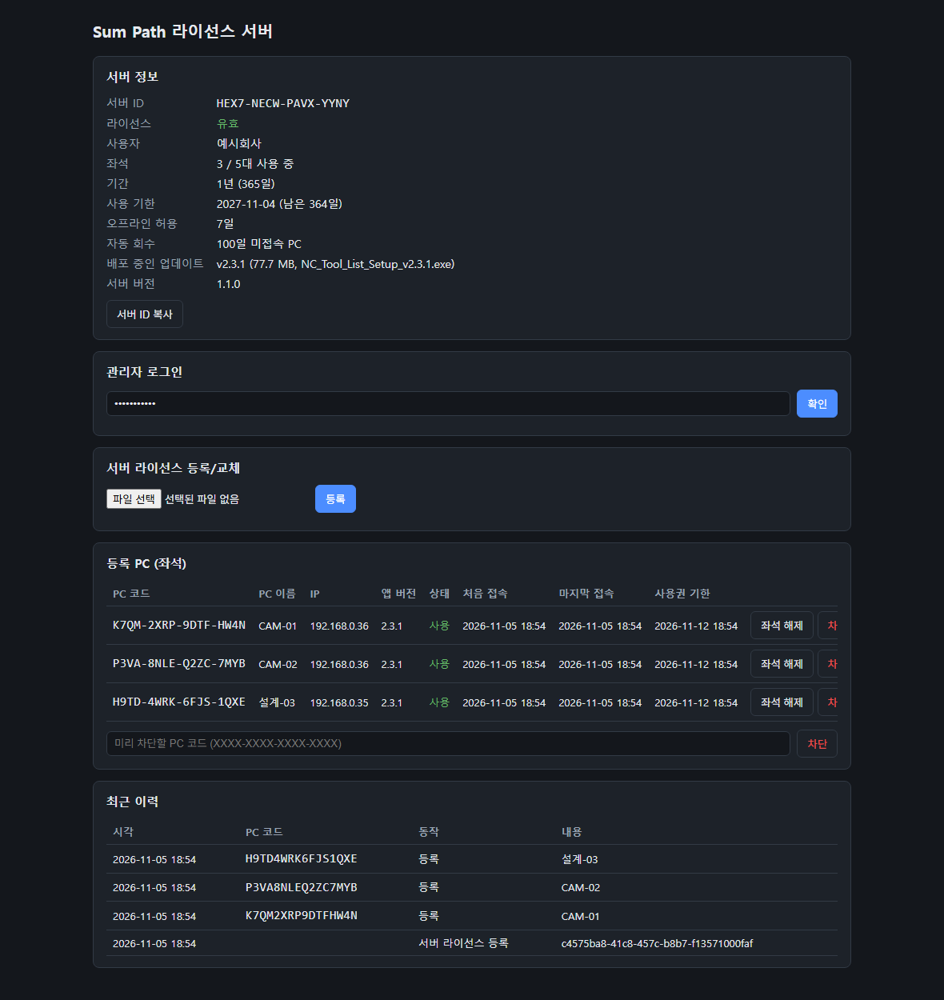

| 방식 | 대상 | 발급 · 등록 | 특징 |
|---|---|---|---|
| 로컬 라이선스 | PC 한 대 | PC 코드로 .lic 발급 → 그 PC에 등록 | 서버 없이 그 PC에서만 동작 |
| 서버 라이선스 | 사내 여러 PC | 서버 ID + 좌석 수로 .lic 발급 → NAS 관리 화면에 등록 → 각 PC는 서버 주소만 입력 | 좌석 수만큼 PC 사용, NAS가 꺼져도 7일간 사용 |
| 체험판 | 모든 PC | 자동 (처음 실행한 날부터) | 30일 무료, 끝나면 등록 창 표시 |
서버 > 로컬 (v2.3.1부터) — 서버 주소가 설정된 PC는 서버 라이선스를 먼저 씁니다.
| 기간 | 사용 기한 | 만료 안내 |
|---|---|---|
| 1년 (365일) | 시작일 + 364일 | 남은 기간 7일 이하부터 앱 시작 시 하루 한 번 안내 |
| 3년 | 시작일 + 1094일 | |
| 영구 | 없음 | — |
F:\Licenser\Sum Path_License Maker\ (발급 프로그램 + 서명 키 signing_key.pem)NC_Tool_List_Setup_v2.3.1.exe)체험 기간이 끝났거나 라이선스가 없으면 앱을 실행할 때 아래 등록 창이 뜹니다. 이 PC 코드의 [복사]를 눌러 관리자에게 보냅니다. 앱을 쓰는 중이면 About → 라이선스 묶음에서도 같은 코드를 볼 수 있습니다.

SumPath_License_Maker.exe를 실행 → [발급] 탭.발급된 라이선스\SumPath_사용자_코드앞4자리_사용기한.lic로 자동 저장되고, issued_licenses.csv에 기록됩니다.
.lic 파일을 메일·USB 등으로 사용 PC에 옮깁니다.C:\ProgramData\NC Tool List\license.lic로 복사됩니다(원본 파일은 지워도 됨).
SumPath_SERVER_…lic는 PC가 아니라 NAS 관리 화면에 등록(4장).C:\NC_Tool_List\)의 exe 옆에 license.lic를 두어도 인식합니다(그 PC 코드로 발급한 파일이어야 함).서버 라이선스는 NAS에서 돌아가는 라이선스 서버(컨테이너)가 좌석 수만큼 PC에 사용권을 나눠 주는 방식입니다. TSERP 서버(8000번)와는 별개이고 DB 설치도 필요 없습니다(SQLite 파일).
각 PC (Sum Path) ──HTTP 8765──▶ sumpath-license 컨테이너 (NAS) ──▶ data 폴더 (서버 키 · 서버 라이선스 · 좌석 DB)
/volume1/docker/SumPath_License_Server/ ├── app.py core.py sumpath_license.py admin.html ├── Dockerfile docker-compose.yml requirements.txt .env.example └── data/ ← 빈 폴더를 직접 먼저 만든다 (없으면 컨테이너가 시작되지 않음)
저장소의 license_server\ 폴더 내용을 최신 master(v2.3.1)에서 그대로 복사하고 data 폴더만 새로 만듭니다.
sumpathlicense — 영어 소문자만 (대문자·-·공백은 거부될 수 있음)[SumPath License Server 1.0.0] server_id=XXXX-XXXX-XXXX-XXXX data=/data
NAS 방화벽을 쓰면 TCP 8765를 사내 LAN 대역에서만 허용합니다. 공유기 포트포워딩(외부 공개)은 하지 않습니다.
사내 PC 브라우저에서 http://NAS주소:8765 (예: http://192.168.0.210:8765). 처음에는 라이선스가 없다고 빨간 글씨로 나옵니다. 맨 위 서버 ID를 [서버 ID 복사]로 복사해 둡니다(발급에 사용).

data/admin_token.txt에 자동으로 만들어집니다. 그 파일 안의 한 줄을 그대로 붙여 넣습니다. 직접 정하려면 .env.example을 .env로 복사해 SUMPATH_ADMIN_TOKEN=원하는값을 적고 프로젝트를 중지 → 빌드/시작합니다.발급된 라이선스\SumPath_SERVER_사용자_N대_사용기한.lic로 저장됩니다.
SumPath_SERVER_…lic → [등록].
data/server_license.lic 이름으로 직접 넣어도 됩니다.등록 창의 [라이선스 서버 연결...] → NAS 주소 입력 → [OK]. 연결에 성공하면 앱이 바로 열립니다.

192.168.0.210만 넣어도 됨About → 라이선스 → [라이선스 서버 설정...] → NAS 주소 입력. 주소를 비우고 [OK]를 누르면 서버 연결을 해제합니다(보관된 로컬 라이선스가 있으면 되살아남).
주소만 넣으면 http://…:8765가 자동으로 붙습니다. 연결에 성공해야만 설정이 저장됩니다.

C:\NC_Tool_List\license_server.json에 {"url": "192.168.0.210"}SUMPATH_LICENSE_SERVER=192.168.0.210PC별 설정은 C:\ProgramData\NC Tool List\license_server.json, 받은 사용권은 같은 폴더의 server_lease.json에 저장됩니다.
| 항목 | 기본값 | 설명 |
|---|---|---|
| 재확인 | 시작 시 + 1시간마다 | 그때마다 사용권을 7일로 갱신 |
| 오프라인 허용 | 7일 | NAS가 꺼져도 마지막 연결 후 7일까지 사용 (서버 라이선스 만료일은 넘지 않음) |
| 좌석 | 라이선스의 좌석 수 | 사용권을 받은 PC 1대 = 1좌석 (동시 실행 수가 아님) |
| 자동 회수 | 100일 | 좌석이 꽉 찼을 때, 100일 넘게 접속 없는 PC의 좌석을 새 PC에 넘김 (서버 v1.1.0에서 30일 → 100일) |

| 버튼 | 동작 |
|---|---|
| 좌석 해제 | 그 PC를 목록에서 지웁니다(교체·폐기한 PC). 다시 접속하면 좌석이 남아 있을 때 다시 등록됩니다. |
| 차단 | 다음 연결부터 거부하고 저장된 사용권도 지웁니다. 네트워크에서 떨어져 있으면 남은 오프라인 기간까지는 쓸 수 있습니다. |
| 차단 해제 | 목록에서 지웁니다. 좌석이 있으면 다음 접속 때 다시 등록됩니다. |
| 미리 차단 | 아직 접속하지 않은 PC 코드를 넣어 미리 막습니다. |
NC_Tool_List_Setup_vX.Y.Z.exe를 \\192.168.0.210\docker\SumPath_License_Server\updates에 복사합니다(이름 그대로). 가장 높은 버전이 배포되고, 관리 화면 "배포 중인 업데이트"에 바로 표시됩니다.NAS의 data/ 폴더 전체를 Hyper Backup 대상에 넣습니다.
| 파일 | 내용 |
|---|---|
server_key.pem | 서버 개인키. 지우거나 바뀌면 서버 ID가 바뀌어 서버 라이선스를 다시 발급해야 합니다. 외부 유출 금지. |
server_license.lic | 등록된 서버 라이선스 |
seats.sqlite3 | 좌석(PC) 목록·이력 |
admin_token.txt | 관리 토큰 |
NAS를 바꿀 때는 data/ 폴더를 그대로 옮기면 서버 ID와 좌석이 유지됩니다(NAS 주소가 바뀌면 각 PC About에서 주소만 다시 설정).
http://NAS주소:8765/api/v1/health → {"ok": true, "server_version": "1.1.0", "server_id": "..."}
http://NAS주소:8765/api/v1/info → 라이선스 · 좌석 요약
F:\Licenser\Sum Path_License Maker\| 항목 | 설명 |
|---|---|
SumPath_License_Maker.exe_internal\ | 발급 프로그램 본체 (v1.4.2). 둘이 항상 같이 있어야 실행됩니다. |
signing_key.pem | 서명 키(개인키). 앱에 들어 있는 공개키와 짝입니다. 잃어버리면 새 라이선스를 더 만들 수 없습니다. 별도 백업 필수, 외부 공유 금지. |
issued_licenses.csv | 발급 기록 (날짜, 사용자, PC 코드/서버 ID) |
발급된 라이선스\ | 발급한 .lic 파일 보관 |
signing_key.pem이 있으면 그 키 사용 → 화면: "포터블 모드"%APPDATA%에서 앱과 일치하는 키를 찾아 복사하지 않고 그 자리에서 사용 → 화면: "자동 연결". 발급 기록·발급 파일도 그 키 폴더(USB)에 저장됩니다.SumPath_License_Maker_v1.4.2.zip)을 풉니다.SumPath_License_Maker.exe와 _internal\만 USB 폴더에 덮어씁니다.signing_key.pem, issued_licenses.csv, 발급된 라이선스\는 그대로 둡니다(zip에는 들어 있지 않음).| 증상 / 문구 | 확인 · 조치 |
|---|---|
| 라이선스 서버에 연결할 수 없습니다 | NAS 주소·포트(8765), NAS 방화벽, 컨테이너 실행 상태. 브라우저로 http://NAS주소:8765/api/v1/health 확인 |
| 서버 라이선스가 등록되지 않았습니다 | 4장 — 관리 화면에서 서버 라이선스 등록 |
| 좌석이 모두 사용 중입니다 | 관리 화면에서 안 쓰는 PC 좌석 해제, 또는 좌석 수를 늘려 다시 발급·교체 |
| 이 서버용 라이선스가 아닙니다 | 발급 때 넣은 서버 ID와 관리 화면의 서버 ID 비교 (data/server_key.pem이 바뀌지 않았는지) |
| PC 날짜가 올바르지 않습니다 | PC·NAS 시간 동기화 (NAS 제어판 → 지역 옵션 → NTP) |
| 서버 사용권 기한이 지났습니다 | 7일 넘게 NAS에 연결하지 못함 → 네트워크·NAS 확인 후 앱 재실행 |
| (발급 프로그램) 공개키와 일치하지 않습니다 | 잘못된 키를 잡은 상태 → 7장. USB 폴더에서 실행하거나 [기존 서명 키 다시 찾기] |
| (발급 프로그램) 발급 버튼이 꺼져 있음 | 서명 키를 못 찾음 → USB 연결 후 [기존 서명 키 다시 찾기] |
| Container Manager에서 프로젝트 이름 오류 | 영어 소문자만 사용 (예: sumpathlicense) |
| 컨테이너가 바로 멈춤 | NAS 폴더에 data 폴더가 있는지 확인 후 다시 시작 |
| 위치 | 경로 | 내용 |
|---|---|---|
| 사용 PC | C:\ProgramData\NC Tool List\license.lic | 등록된 로컬 라이선스 |
C:\ProgramData\NC Tool List\license_server.json | 라이선스 서버 주소 | |
C:\ProgramData\NC Tool List\server_lease.json | 서버에서 받은 사용권(7일) | |
C:\NC_Tool_List\license.lic / license_server.json | (선택) 미리 넣어 두는 파일 | |
| NAS | /docker/SumPath_License_Server/ | 서버 프로그램 · docker-compose.yml |
/docker/SumPath_License_Server/data/ | 서버 키 · 서버 라이선스 · 좌석 DB · 관리 토큰 (백업) | |
/docker/SumPath_License_Server/updates/ | 배포할 앱 설치 파일 (\\192.168.0.210\docker\SumPath_License_Server\updates) | |
| 발급 USB | F:\Licenser\Sum Path_License Maker\ | 발급 프로그램 · 서명 키 · 발급 기록 · 발급된 라이선스 (백업) |
license_server/DEPLOY_Synology.md · 버전 기록: ABOUT_RELEASE_INSTRUCTIONS.md